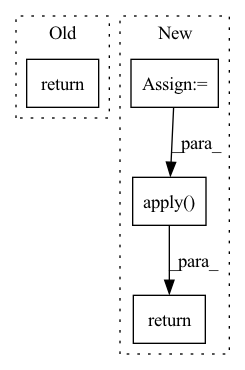

Pattern ID :415
Before Change
self.blocks = nn.ModuleList([ReversibleBlock(f=f, g=g) for f, g in blocks])
def forward(self, x):
return _ReversibleFunction.apply(x, self.blocks)
After Change
if self.layer_dropout > 0:
to_drop = torch.empty(len(self.blocks)).uniform_(0, 1) < self.layer_dropout
blocks = [block for block, drop in zip(self.blocks, to_drop) if not drop]
blocks = self.blocks[:1] if len(blocks) == 0 else blocks
return _ReversibleFunction.apply( x, blocks)
In pattern: SUPERPATTERN
Frequency: 3
Non-data size: 4
Instances Fragment ID: 1579408
Project Name: lucidrains/reformer-pytorch
Commit Name: f989c1483f6f3d108722cfc1070933b6bee9a274
Time: 2020-02-23
Author: lucidrains@gmail.com
File Name: reformer_pytorch/reversible.py
M Class Name: ReversibleSequence
N Class Name: ReversibleSequence
M Method Name: forward(2)
N Method Name: forward(2)
M Parent Class: nn.Module
N Parent Class: nn.Module
M File Name: reformer_pytorch/reversible.py
N File Name: reformer_pytorch/reversible.py
M Start Line: 118
M End Line: 118
N Start Line: 118
N End Line: 125
Before Change
def forward(self, x, arg_route = (True, True), **kwargs):
f_args, g_args = map(lambda route: kwargs if route else {}, arg_route)
block_kwargs = {"f_args": f_args, "g_args": g_args}
return _ReversibleFunction.apply(x, self.blocks, block_kwargs)
After Change
x = torch.cat([x, x], dim=-1)
blocks = self.blocks
args = route_args(self.args_route, kwargs, len(blocks))
args = list(map(lambda x: {"f_args": x[0], "g_args": x[1]}, args))
layers_and_args = list(zip(blocks, args))
if self.training and self.layer_dropout > 0:
layers_and_args = layer_drop(layers_and_args, self.layer_dropout)
blocks, args = map(lambda ind: list(map(itemgetter(ind), layers_and_args)), (0, 1))
out = _ReversibleFunction.apply( x, blocks, args)
return torch.stack(out.chunk(2, dim=-1)).sum(dim=0)
Fragment ID: 1579412
Project Name: lucidrains/linear-attention-transformer
Commit Name: fa23ce09a98a63d26116e3935ad5902cf705255d
Time: 2020-06-04
Author: lucidrains@gmail.com
File Name: linear_attention_transformer/reversible.py
M Class Name: ReversibleSequence
N Class Name: ReversibleSequence
M Method Name: forward(2)
N Method Name: forward(3)
M Parent Class: nn.Module
N Parent Class: nn.Module
M File Name: linear_attention_transformer/reversible.py
N File Name: linear_attention_transformer/reversible.py
M Start Line: 118
M End Line: 121
N Start Line: 161
N End Line: 174
Before Change
Returns:
torch.Tensor: quantized input tensor.
return self.activation(input_tensor)
After Change
Returns:
torch.Tensor: quantized input tensor.
activated_input = self._activation(input_tensor)
if self._gradient_cancellation_threshold:
return GradientCancellation.apply( activated_input, self._gradient_cancellation_threshold)
else:
return activated_input
Fragment ID: 1579414
Project Name: hpi-xnor/bitorch
Commit Name: 36ca7eff5b99dfac51ca950e42e5b73259cdf8c6
Time: 2021-10-08
Author: overkill98@web.de
File Name: bitorch/layers/qactivation.py
M Class Name: QActivation
N Class Name: QActivation
M Method Name: forward(2)
N Method Name: forward(2)
M Parent Class: nn.Module
N Parent Class: nn.Module
M File Name: bitorch/layers/qactivation.py
N File Name: bitorch/layers/qactivation.py
M Start Line: 31
M End Line: 31
N Start Line: 78
N End Line: 82